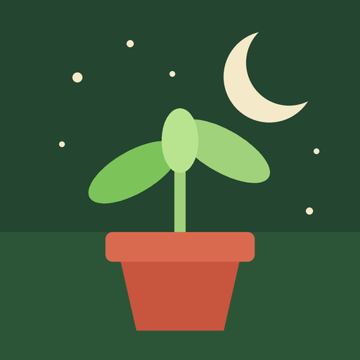

Biodynamic Gardening Calendar
Best times to sow, repot, take cuttings and harvest, by the Moon among the real IAU constellations, after Maria Thun's biodynamic calendar.
Open the calendarPut it on your home screen (iPhone, iPad)
- Open this page in Safari.
- Tap the Share button (the square with an arrow).
- Tap Add to Home Screen, then Add.
Put it on your home screen (Android)
- Open this page in Chrome.
- Tap the three dots at the top right.
- Tap Add to home screen or Install app, then Add.
On a phone or tablet
Open this page there and add it to the home screen: on iPhone and iPad with Safari's Share > Add to Home Screen, on Android with Chrome's three dots > Add to home screen.The home-screen icon opens the calendar directly. It needs the internet. If nobody has used the calendar for a few days, the first visit can show a "wake up" button; tap it and wait about a minute.